분자정보공학 · DNA 데이터 저장 실습
DNA 저장의 부호화–채널–복호 실습
이름 · 사진 · 파일 → DNA 가닥 풀 → 시퀀싱 read → 원래 파일. 바깥 부호 XOR와 안쪽 부호 Reed–Solomon을 넣고, 오류가 섞인 read에서 데이터를 불러오는 과정
- 가닥 148 nt
- 데이터 17 byte/가닥
- RS(27,19) · t = 4
- XOR 1.5배
- CRC-32
Introduction
개념
실습 대상
- 디지털 파일 1개 → DNA 가닥(올리고) 풀 → 가상 시퀀싱 read → 원래 파일 복원
- 입력 세 종류: 이름(문자열) · 사진 · 임의 파일 → 모두 byte 열로 통일
- 부호화: byte → 헤더 · 17 byte 행 → XOR 행(바깥 부호) → RS 패리티(안쪽 부호) → 2 bit/nt DNA + 프라이머 → FASTA
- 채널: 합성 · 보관 · 시퀀싱의 치환 · 삽입 · 결실 · 가닥 소실 · 역방향 read를 난수로 재현 → FASTQ
- 복호: 방향 정리 → 프라이머 확인 → index로 묶기 → consensus → RS → XOR → 파일 조립 · CRC-32 확인
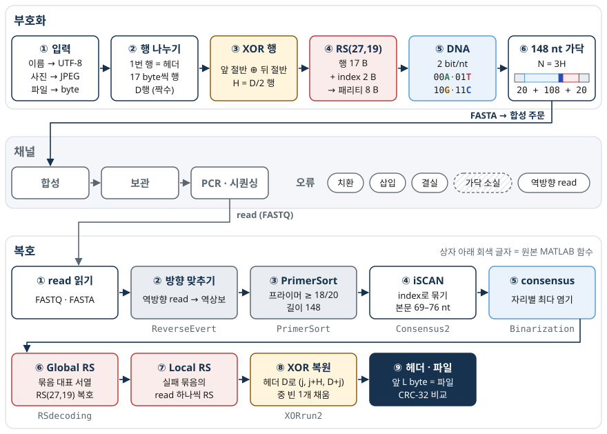
코드
세 가지 실행 경로
- 세 구현(Python · MATLAB · JavaScript)이 같은 설계서(DNAS-1)를 따름 → 같은 입력 byte에서 같은 FASTA · 같은 read · 같은 복호 보고
- RS · CRC-32 · 난수(LCG) 모두 직접 구현 → Communications Toolbox · 외부 라이브러리 불필요
- Python: 표준 라이브러리만 사용, 사진 축소에만 Pillow (Colab 기본 포함)
- MATLAB: 기본 MATLAB만 사용 (MATLAB Online 가능)
- 사진 → JPEG 변환 결과는 언어 · 브라우저마다 다를 수 있음 → 비교 기준은 byte
1. 입력 → byte
개념
문자열: ASCII와 UTF-8
- 글자 = 코드포인트(유니코드 번호) → 부호화 규칙에 따라 byte 열
- ASCII: 0–127, 영문 · 숫자 · 기호, 1글자 = 1 byte (예: 'S' = 83 = 0x53)
- UTF-8: ASCII 글자는 그대로 1 byte, 한글 음절(U+AC00–U+D7A3)은 3 byte
- 데이터 가닥 하나(17 byte)에 영문 17자 또는 한글 5자(15 byte)
- 3-2강 실습 코드
format(ord(c), "08b"): ASCII 전제 → 한글 코드포인트(예: 0xC1A1)는 8 bit에 안 들어감 → UTF-8 byte로 해결
표 1. 이름의 코드포인트와 UTF-8 byte
| 글자 | 코드포인트 | UTF-8 byte (16진) | byte 수 |
|---|---|---|---|
| S | U+0053 | 53 | 1 |
| O | U+004F | 4F | 1 |
| N | U+004E | 4E | 1 |
| G | U+0047 | 47 | 1 |
| 송 | U+C1A1 | EC 86 A1 | 3 |
| 영 | U+C601 | EC 98 81 | 3 |
| 준 | U+C900 | EC A4 80 | 3 |
사진: 축소 · JPEG 품질 → byte 수 → 가닥 수
- 원본 사진(수 MB) 그대로 → 가닥 수만~수십만 개 → 실습용으로 긴 변
max_side(기본 64 px) 축소 + JPEG 품질(기본 60 %) 재저장 - byte 수 L → 행 수 D → 가닥 수 N → 합성 nt 합계
- 예: 3 KB 사진 → D = 1 + ⌈3000 / 17⌉ = 178 → N = 267가닥 → 39,516 nt
- 예: 10,000 byte 사진 → D = 1 + ⌈10000 / 17⌉ = 590 → N = 885가닥 → 130,980 nt (10,240 byte면 N = 906)
- 긴 변 32 → 128 px: 픽셀 수 약 16배, byte 수 약 2.8배 (표 2) → JPEG 머리 부분(양자화표 · 허프만표 등)의 고정 크기 영향 (Pillow 컬러 1 × 1 px JPEG = 631 byte)
- 흑백: 색 성분 없음 → byte 약 20–40 % 감소 (표 2 예시 기준)
- 같은 사진도 Python(Pillow) · MATLAB(
imwrite) · 브라우저(canvas)의 JPEG 인코더 차이로 byte가 다름 → 같은 byte일 때만 같은 FASTA
표 2. 사진 크기와 가닥 수 예 (강의 그림 helix.jpg 519 × 760 px, Pillow thumbnail, 품질 60)
| 긴 변 | 크기 (px) | 컬러 byte | D | N | 합성 nt | 흑백 byte | 흑백 N |
|---|---|---|---|---|---|---|---|
| 32 | 22 × 32 | 801 | 50 | 75 | 11,100 | 487 | 45 |
| 64 | 44 × 64 | 1,159 | 70 | 105 | 15,540 | 798 | 72 |
| 128 | 87 × 128 | 2,203 | 132 | 198 | 29,304 | 1,688 | 153 |
파일: byte 그대로
- type 0 (file), 확장자 소문자 4자 이내 → 헤더에 저장 (없으면
bin) - 입력 형식 코드: 0 file · 1 text (확장자
txt) · 2 image (확장자jpg)
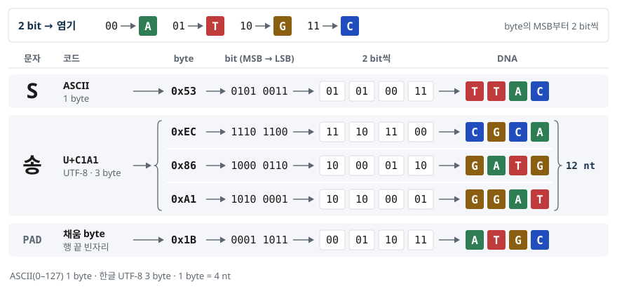
DNAS-1 설계서 §3 · 3-2강 실습 코드 week3_dna.py
코드
- Python
str.encode("utf-8")= MATLABunicode2native(s, 'UTF-8')= JavaScriptTextEncoder→ 같은 byte - MATLAB
char는 UTF-16 →double(name)= 코드포인트 (한글 음절 범위) - 사진: Python
Image.thumbnail+save(..., quality=60)· MATLAB 정수 간격 축소 +imwrite(..., 'Quality', 60)(툴박스 없이) - 설명서의 코드 조각(1–9절)은 한 세션에서 차례로 실행하면 변수가 이어짐 (Python:
rows→rs_encode→oligo→reads)
name = "송영준" # ← 자기 이름
b = name.encode("utf-8") # 문자열 → UTF-8 byte
print(len(b), b.hex(" ")) # 9 ec 86 a1 ec 98 81 ec a4 80
for ch in name: # 글자별 코드포인트 · byte
print(ch, f"U+{ord(ch):04X}", ch.encode("utf-8").hex(" "))
print("ASCII만으로 표현?", name.isascii()) # Falsename = '송영준'; % ← 자기 이름
b = unicode2native(name, 'UTF-8'); % uint8, 1 x 9
fprintf('%d byte: %s\n', numel(b), sprintf('%02x ', b));
fprintf('U+%04X\n', double(name)); % 코드포인트 C1A1 C601 C900
isAscii = all(double(name) < 128) % 0 → ASCII만으로는 불가import io, math
from PIL import Image # Colab 기본 포함
im = Image.open("photo.jpg").convert("RGB")
im.thumbnail((64, 64)) # 긴 변 64 px, 비율 유지
buf = io.BytesIO()
im.save(buf, "JPEG", quality=60) # 품질 60 %
L = len(buf.getvalue())
D = 1 + math.ceil(L / 17) # 헤더 1행 + 데이터 행
D += D % 2 # 짝수로 올림
N = D // 2 * 3 # XOR 포함 가닥 수
print(L, "byte →", D, "행 →", N, "가닥 →", N * 148, "nt")전체 구현: 10.1 입력 → byte
2. 헤더와 행 나누기
개념
17 byte 행
- 파일 byte 열 → 17 byte 단위 행 (행 1개 = 가닥 1개의 데이터)
- 행 1 = 헤더(파일 정보), 행 2부터 파일 byte
- 마지막 행 빈자리: PAD 0x1B (00 01 10 11 → ATGC 반복 · 호모폴리머 없음 · GC 50 %)
- 행 수 D = 1 + ⌈L / 17⌉, 홀수면 PAD 17개 행 추가 → D 짝수 (XOR 짝: 행 j와 행 j + D/2)
- 빈 파일(L = 0) → D = 2 (헤더 + PAD 행)
표 3. 헤더 행 17 byte · 오른쪽 열 = 이름 "SONG"의 실제 값
| byte | 내용 | "SONG" (16진) |
|---|---|---|
| 0 | version = 0x01 | 01 |
| 1 | type: 0 file · 1 text · 2 image | 01 |
| 2–5 | 파일 길이 L (uint32, big-endian) | 00 00 00 04 |
| 6–9 | 파일 byte의 CRC-32 (big-endian) | 05 78 03 15 |
| 10–11 | D = 헤더 포함 데이터 행 수, 짝수 (uint16) | 00 02 |
| 12 | flags: bit0 = whitening 사용 | 00 |
| 13–16 | 확장자 ASCII 소문자 4 byte, 모자라면 공백 0x20 | 74 78 74 20 |
- 헤더는 whitening 대상 아님 → 복호의 출발점
- 복호기는 헤더의 L로 PAD 제거, CRC-32로 복원 확인, D로 XOR 짝 계산
표 4. 파일 길이 L과 행 · 가닥 수
| L (byte) | 1 + ⌈L/17⌉ | D | H = D/2 | N = 3H | 예 |
|---|---|---|---|---|---|
| 4 | 2 | 2 | 1 | 3 | "SONG" |
| 9 | 2 | 2 | 1 | 3 | "송영준" |
| 18 | 3 | 4 | 2 | 6 | "Hello, DNA! 안녕" (PAD 행 추가) |
| 70 | 6 | 6 | 3 | 9 | 6줄 → 9줄 (3절) |
| 3,000 | 178 | 178 | 89 | 267 | 3 KB 사진 |
DNAS-1 설계서 §4 · §5
코드
- 헤더: Python
struct.pack(">I", …)= 4 byte big-endian · MATLABfliplr(typecast(uint32(x), 'uint8')) - CRC-32: Python
zlib.crc32(표준 라이브러리) · MATLABdnas_crc32(직접 구현, 9절) - 행 나누기: 17 byte씩 자르고 모자란 만큼
0x1B반복 - MATLAB
reshape(body, 17, D-1)': 열 우선 순서 → 전치로 행 = 가닥
import math, struct, zlib
data = "SONG".encode("utf-8") # 파일 byte
L = len(data)
D = 1 + math.ceil(L / 17)
D += D % 2 # 헤더 포함 행 수, 짝수
header = (bytes([1, 1]) # version 1 · type 1(text)
+ struct.pack(">I", L) # 길이 L, 4 byte big-endian
+ struct.pack(">I", zlib.crc32(data)) # CRC-32
+ struct.pack(">H", D) # D, 2 byte
+ bytes([0]) # flags: whitening 끔
+ b"txt ") # 확장자 4 byte
rows = [header]
for r in range(D - 1): # 17 byte씩, 빈자리는 PAD
chunk = data[17 * r : 17 * r + 17]
rows.append(chunk + bytes([0x1B]) * (17 - len(chunk)))
for row in rows:
print(row.hex(" "))
# 01 01 00 00 00 04 05 78 03 15 00 02 00 74 78 74 20
# 53 4f 4e 47 1b 1b 1b 1b 1b 1b 1b 1b 1b 1b 1b 1b 1bdata = unicode2native('SONG', 'UTF-8'); % 1 x L uint8
L = numel(data);
D = 1 + ceil(L/17); D = D + mod(D, 2); % 헤더 포함, 짝수
be = @(x) fliplr(typecast(x, 'uint8')); % big-endian byte 열
hdr = [uint8([1 1]), be(uint32(L)), be(uint32(dnas_crc32(data))), ...
be(uint16(D)), uint8(0), uint8('txt ')]; % 17 byte
body = [data, repmat(uint8(27), 1, 17*(D-1) - L)]; % PAD 0x1B = 27
rows = [hdr; reshape(body, 17, D-1)']; % D x 17, 1행 = 헤더
fprintf('%02x ', rows(1,:)); fprintf('\n');전체 구현: 10.2 헤더 · 행 나누기
3. XOR 넣기 — 바깥 부호
개념
XOR의 원리
- XOR(⊕, 배타적 논리합): 두 bit가 같으면 0, 다르면 1
- 성질: A ⊕ B ⊕ B = A → C = A ⊕ B이면 A = C ⊕ B, B = C ⊕ A
- byte XOR = bit 8개 각각 XOR (예: 0x53 ⊕ 0x1B = 01010011 ⊕ 00011011 = 01001000 = 0x48)
- 3-2강 좌석 열 비유: 첫 열
001, 둘째 열000→ 셋째 열 = 001 ⊕ 000 =001(패리티) → 둘째 열이 없어져도 001 ⊕ 001 =000
표 5. XOR 진리표
| A | B | A ⊕ B |
|---|---|---|
| 0 | 0 | 0 |
| 0 | 1 | 1 |
| 1 | 0 | 1 |
| 1 | 1 | 0 |
행 단위 XOR: 앞 절반 ⊕ 뒤 절반
- H = D / 2 · 앞 절반 행(1…H) ⊕ 뒤 절반 행(H+1…D)
- Pj = 행 j ⊕ 행 j+H (j = 1…H) → XOR 가닥 D + j
- 전체 가닥 N = D + H = 3H → 데이터 행의 1.5배, 풀의 1/3이 XOR 가닥
- 3-2강 “6줄 → 9줄”: D = 6 → H = 3 → 묶음 (1, 4, 7) · (2, 5, 8) · (3, 6, 9)
- 행 단위 XOR → 묶음 1개 = 가닥 정확히 3개 (행 j · 행 j+H · XOR 가닥 D+j)
표 6. 6줄 → 9줄 (D = 6, H = 3, 파일 52–85 byte · 52–68 byte는 PAD 행 추가)
| 가닥 | role | 내용 | 묶음 |
|---|---|---|---|
| 1 | header | 행 1 (헤더) | j = 1 |
| 2 | data | 행 2 | j = 2 |
| 3 | data | 행 3 | j = 3 |
| 4 | data | 행 4 | j = 1 |
| 5 | data | 행 5 | j = 2 |
| 6 | data | 행 6 | j = 3 |
| 7 | xor | P1 = 행 1 ⊕ 행 4 | j = 1 |
| 8 | xor | P2 = 행 2 ⊕ 행 5 | j = 2 |
| 9 | xor | P3 = 행 3 ⊕ 행 6 | j = 3 |
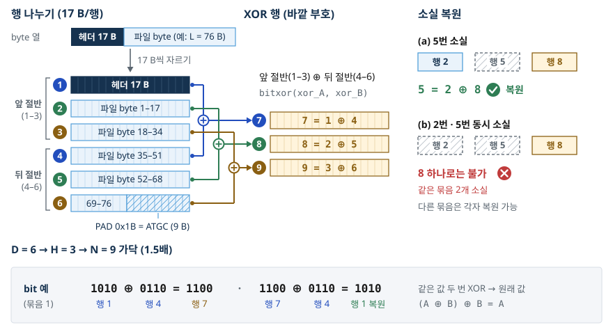
복원 가능 · 불가능
- 한 묶음 (j, j+H, D+j)에서 1개 소실 → 나머지 2개의 XOR로 복원
- 서로 다른 묶음에서 1개씩 소실 → 모두 복원
- 같은 묶음에서 2개 이상 소실 → 그 묶음의 데이터 행 복원 불가
- 헤더(1번)도 묶음 (1, 1+H, D+1)에 포함 → XOR 보호
표 7. 표 6 배치에서의 소실 예
| 소실 가닥 | 결과 |
|---|---|
| 4 | 행 4 = 행 1 ⊕ P1 (가닥 1 ⊕ 가닥 7) |
| 1 (헤더) | 행 1 = 행 4 ⊕ P1 |
| 4, 8 | 다른 묶음 → 둘 다 복원 |
| 1, 4 | 같은 묶음 → 행 1 · 행 4 복원 불가 |
| 4, 7 | 같은 묶음 → 행 4 복원 불가 (P1은 데이터 아님) |
RAID와의 대응 · 소실 부호
- RAID 4/5: 디스크 여러 개 + 패리티 → 디스크 1개 고장 복구, 조건 = 고장 디스크를 앎
- XOR = 소실(erasure) 부호: 어느 가닥이 없는지 알아야 사용 · 값이 틀린 가닥은 스스로 못 찾음
- 그 정보(가닥 없음 · RS 복호 실패)를 안쪽 RS가 제공 → 이중 구조 (바깥 XOR + 안쪽 RS)
- 대가: 합성할 가닥 1.5배
3-2강 강의록 (XOR 패리티 · DNA 저장에서의 XOR) · STL_Encode.m 33–36행 · XORrun2.m
코드
- Python:
bytes(a ^ b for a, b in zip(r1, r2))= byte별 XOR - MATLAB:
bitxor(A, B)— uint8 행렬끼리 원소별 XOR, 행 H개를 한 번에 - whitening을 켠 경우 XOR 입력 = whitening 뒤 byte (저장되는 byte 기준)
H = len(rows) // 2 # rows: 헤더 포함 D행
xor_rows = [bytes(a ^ b for a, b in zip(rows[j], rows[j + H]))
for j in range(H)] # P_j = 행 j ⊕ 행 j+H
strands = rows + xor_rows # N = D + H = 3H
back = bytes(a ^ p for a, p in zip(rows[0], xor_rows[0]))
print(len(strands), back == rows[H]) # 3 True (행 1+H 복원)H = size(rows, 1) / 2; % rows: D x 17 uint8
P = bitxor(rows(1:H, :), rows(H+1:end, :)); % P_j = 행 j ⊕ 행 j+H
strands = [rows; P]; % N = 3H 행
back = bitxor(rows(1, :), P(1, :)); % 행 1+H 복원
isequal(back, rows(1+H, :)) % 1 (true)전체 구현: 10.3 XOR
4. RS 넣기 — 안쪽 부호
개념
GF(2⁸): byte 256개의 산술
- 원소 = byte 값 0–255 (심볼 1개 = 8 bit)
- 덧셈 = XOR (뺄셈도 같음)
- 곱셈: 원시 다항식 x⁸ + x⁴ + x³ + x² + 1 (0x11D) 기준, 원시원소 α = 2의 거듭제곱 표(log · antilog)로 계산
- α¹, α², …, α²⁵⁵ = 1 → 0이 아닌 원소 255개 전부 생성
생성 다항식 · 계통 부호
- 첫 근 α¹ (fcr = 1) = MATLAB
rsenc·rsgenpoly기본값 - 계통 부호: 부호어 = 메시지 ‖ 패리티, 패리티 = m(x) · x⁸ mod g(x)
- 메시지 19 byte = 데이터 17 + index 2 → 부호어 27 byte = 108 nt
- RS(27,19): n − k = 8 → t = 4 심볼(byte) 오류 정정 · RS(255,247)의 단축 부호
- 복호: 신드롬 Sj = r(αj), j = 1…8 (모두 0 = 오류 없음) → Berlekamp–Massey(오류 위치 다항식) → Chien 탐색(위치) → Forney(값)
- 오류 5개 이상: 대부분 실패 판정, 드물게 다른 부호어로 오정정 (8절)
- 검산 벡터:
rsenc(gf([83 79 78 71],8),8,4)→ 패리티 226 229 64 153 ("SONG", RS(8,4))
byte 심볼과 치환 정정 범위
- 심볼 1개 = 1 byte = 4 nt (자리 고정) → 1 nt 치환은 항상 심볼 1개 → 108 nt 어디서나 치환 4 nt 보장 (같은 byte 안 치환은 여러 개라도 심볼 1개)
- 보장 범위 = RS 부호어 1개 복호 · 전체 복호는 RS 전에 index 자리(89–96 nt)로 묶음 → index 자리 치환 read는 엉뚱한 묶음 → index 검사로 버려짐 → coverage 1이면 index 1 nt 치환만으로 가닥 소실 (XOR로만 복구)
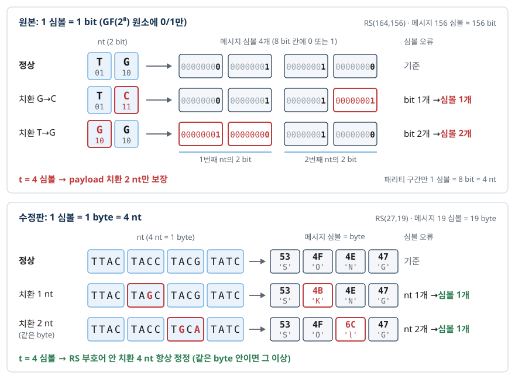
DNAS-1 설계서 §6 · MATLAB rsenc · rsgenpoly
코드
- GF(2⁸) 곱셈: a · b = αlog a + log b → 지수 표
EXP· 로그 표LOG - 생성 다항식: (x + αi)를 차례로 곱함 (GF(2⁸)에서 − = +)
- 부호화 = 다항식 나눗셈의 나머지 → 메시지 뒤에 패리티 8 byte
- Python · MATLAB · JS 모두 직접 구현 → 툴박스 없이 실행, 툴박스가 있으면
rsenc와 대조 rs_decode반환: (메시지 19 byte, 고친 byte 수) 또는 실패
EXP, LOG = [0] * 512, [0] * 256 # GF(2^8) 지수 · 로그 표
x = 1
for i in range(255):
EXP[i], LOG[x] = x, i
x <<= 1
if x & 0x100:
x ^= 0x11D # x^8 + x^4 + x^3 + x^2 + 1
for i in range(255, 512):
EXP[i] = EXP[i - 255]
def gmul(a, b): # GF(2^8) 곱셈
return 0 if a == 0 or b == 0 else EXP[LOG[a] + LOG[b]]
def rs_encode(msg, nsym=8): # 메시지 ‖ 패리티 (계통 부호)
g = [1]
for i in range(1, nsym + 1): # g(x) = ∏ (x − α^i), fcr = 1
g = [a ^ gmul(b, EXP[i]) for a, b in zip(g + [0], [0] + g)]
buf = list(msg) + [0] * nsym
for i in range(len(msg)): # m(x)·x^nsym mod g(x)
c = buf[i]
if c:
for j in range(1, len(g)):
buf[i + j] ^= gmul(g[j], c)
return list(msg) + buf[len(msg):]
print(rs_encode(b"SONG", 4)[4:]) # [226, 229, 64, 153]msg = double('SONG'); % 83 79 78 71
cw = rsenc(gf(msg, 8), 8, 4); % RS(8,4), 패리티 4 byte
p = double(cw.x(5:8)) % 226 229 64 153
g = rsgenpoly(255, 247) % 1 227 44 178 71 172 8 224 37전체 구현(복호 포함): 10.4 RS
5. DNA로 바꾸기 · 프라이머 · FASTA
개념
2 bit/nt 매핑
표 8. bit → 염기 (ATGC 순서)
| bit | 00 | 01 | 10 | 11 |
|---|---|---|---|---|
| 염기 | A | T | G | C |
- 1 byte = 4 nt, 윗 bit(MSB)부터: 'S' 0x53 = 01 01 00 11 → TTAC · 3주차
format(…, "08b")·dec2bin과 같은 순서 - PAD 0x1B = 00 01 10 11 → ATGC · index 1 = 0x00 0x01 → AAAAAAAT
- 3-2강 실습: 00 A · 01 C · 10 G · 11 T (ACGT 순서) → 'S' = CCAT · 이번 실습은 ATGC 매핑 → 같은 byte도 서열이 다름
148 nt 가닥 구조
표 9. 가닥 구조 (위치 1부터)
| 위치 | 길이 | 내용 |
|---|---|---|
| 1–20 | 20 nt | F 프라이머 AGCCTTGTGTCCATCAATCC |
| 21–88 | 68 nt | 데이터 17 byte |
| 89–96 | 8 nt | index 2 byte (uint16, 1부터) |
| 97–128 | 32 nt | RS 패리티 8 byte |
| 129–148 | 20 nt | R 프라이머 TGCGCTATGGTTTGGCTAAT |
- 프라이머: Jikji6 쌍 (
primerSelect.m) · F GC 50 %, R GC 45 % - R은 적힌 서열 그대로 3′ 끝에 연결 (Jikji6.txt 131–150 nt와 같은 규칙) · 4-3 실습(
week4_oligo_lab.m)은 rc(R) 연결 → 규칙 차이 주의 - 프라이머 역할: PCR 증폭 · 파일 선택(파일마다 다른 쌍) · 복호에서 방향 · 길이 확인 표식
- 정보 밀도: 데이터 136 bit / 148 nt = 0.92 bit/nt → XOR 포함 × 2/3 ≈ 0.61 bit/nt (헤더 가닥 제외 근사)
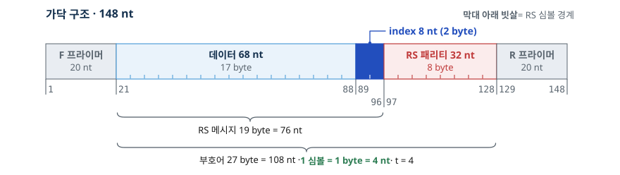
FASTA
- 형식:
>줄(이름 · 설명) + 서열 한 줄, 줄바꿈\n - 이름
dnas_0001부터 ·idx·role(header / data / xor) ·len - 이름 "SONG" 전체 (3가닥, 웹 · Python · MATLAB 출력 동일):
>dnas_0001 idx=1 role=header len=148
AGCCTTGTGTCCATCAATCCAAATAAATAAAAAAAAAAAAAATAAATTTCGAAAACATTTAAAAAAAGAAAATCTATCGATCTAAGAAAAAAAAATTAGACACGATTCTACGAGTACGCAGCCCTCAATGCGCTATGGTTTGGCTAAT
>dnas_0002 idx=2 role=data len=148
AGCCTTGTGTCCATCAATCCTTACTACCTACGTATCATGCATGCATGCATGCATGCATGCATGCATGCATGCATGCATGCATGCATGCAAAAAAAGTGAGCAGGAATTAAAAAAGCCCCACAGCACCCTGCGCTATGGTTTGGCTAAT
>dnas_0003 idx=3 role=xor len=148
AGCCTTGTGTCCATCAATCCTTAGTACGTACGTATCATGCATCCATCGTGACATGAAACGATGCATGTATGCTGCCTGACTGCCACGCAAAAAAACAGGGAATAATAGTACGAGCCATAATCTATACCTGCGCTATGGTTTGGCTAATGC % · 최대 호모폴리머
- GC % = (G + C 개수) / 전체
- 호모폴리머 = 같은 염기 연속 · 길수록 합성 · 시퀀싱 오류 증가 요인
- index 윗 byte 0x00 → AAAA · 가닥 256개 미만이면 모든 가닥의 index 자리가 A 4개 이상으로 시작
- 헤더 가닥: 길이 칸의 0 byte → 작은 파일일수록 긴 poly-A (표 10)
표 10. "SONG" 가닥의 GC %와 최대 호모폴리머
| 가닥 | role | GC % | 최대 호모폴리머 | 위치 |
|---|---|---|---|---|
| 1 | header | 29.7 | A 14개 | 길이 칸 00 00 00 04 |
| 2 | data | 45.9 | A 7개 | index 00 02 |
| 3 | xor | 43.9 | A 7개 | index 00 03 |
whitening (선택 기능)
- JPEG byte: 0x00 연속 · 0xFF 표식 → AAAA… · CCCC… 긴 호모폴리머
- whitening: 데이터 행(2…D) 17 byte를 의사난수 마스크와 XOR → 무작위에 가까운 byte → 호모폴리머 감소
- 마스크: x = r(행 번호)에서 시작, 17번 x ← (1664525x + 1013904223) mod 2³², 마스크 = ⌊x / 2²⁴⌋
- 해제: 같은 마스크로 다시 XOR (A ⊕ M ⊕ M = A) · 사용 여부 = 헤더 flags bit0
- 대상 아님: 헤더 행 · index · RS 패리티
- 예: helix 그림 64 px · 품질 60 (Pillow) → 최대 호모폴리머 35 nt(끔) → 10 nt(켬, 남은 최댓값은 헤더 가닥) · 전체 GC 45.3 % → 47.2 %
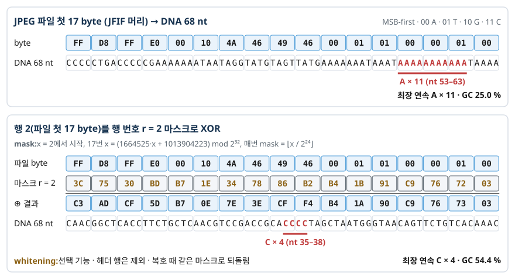
DNAS-1 설계서 §1–2 · §5 · primerSelect.m · PrimerSort.m · 3-2강 week3_dna.py · 4-3 week4_oligo_lab.m
코드
- byte → 4 nt:
(b >> 6) & 3,(b >> 4) & 3,(b >> 2) & 3,b & 3→"ATGC"에서 글자 선택 - MATLAB:
bitshift(b, -6)·bitand(…, 3)→ 4 × n 행렬 → 열 우선으로 펼침 - DNA → byte: 역변환, ATGC 외 글자(N 등)는 A(00)로 처리 (연구실
Binarization.m관례) - GC % · 최대 호모폴리머: 3-2강 코드와 같은 계산
BASES = "ATGC" # 00 A · 01 T · 10 G · 11 C
def to_dna(bs): # byte → 4 nt, 윗 bit부터
return "".join(BASES[(b >> s) & 3] for b in bs for s in (6, 4, 2, 0))
F = "AGCCTTGTGTCCATCAATCC" # Jikji6 F, 20 nt
R = "TGCGCTATGGTTTGGCTAAT" # Jikji6 R, 20 nt
print(to_dna(b"S"), to_dna([0x1B]), to_dna([0, 1])) # TTAC ATGC AAAAAAAT
cw = rs_encode(rows[1] + (2).to_bytes(2, "big")) # 행 2: 17 B + index 2 B
oligo = F + to_dna(cw) + R # 20 + 108 + 20 = 148 nt
gc = 100 * sum(c in "GC" for c in oligo) / len(oligo)
run = best = 1
for a, b in zip(oligo, oligo[1:]): # 최대 호모폴리머
run = run + 1 if a == b else 1
best = max(best, run)
print(f">dnas_0002 idx=2 role=data len={len(oligo)}\n{oligo}")
print(f"GC {gc:.1f} %, 최대 호모폴리머 {best}") # GC 45.9 %, 7BASES = 'ATGC'; % 00 A · 01 T · 10 G · 11 C
to_dna = @(b) BASES(reshape(double([bitshift(b,-6); bitand(bitshift(b,-4),3); ...
bitand(bitshift(b,-2),3); bitand(b,3)]), 1, []) + 1);
to_dna(uint8('S')) % 'TTAC'
F = 'AGCCTTGTGTCCATCAATCC'; R = 'TGCGCTATGGTTTGGCTAAT';
msg = [rows(2,:), uint8([0 2])]; % 17 B + index 2 B = 19 B
cw = rsenc(gf(double(msg), 8), 27, 19); % 툴박스 없으면 dnas_rs_encode
cw = uint8(cw.x); % 27 B
oligo = [F, to_dna(cw), R]; % 148 nt
fprintf('%s\nGC %.1f %%\n', oligo, 100*mean(oligo == 'G' | oligo == 'C'));전체 구현: 10.5 DNA · FASTA
6. 채널 — 합성 · 보관 · 시퀀싱 오류
개념
오류의 종류
- 채널 = 가닥 설계부터 read가 돌아오기까지 전 과정 (합성 → 보관 → PCR → 시퀀싱)
- DNA 합성 · 시퀀싱 = 같은 가닥의 복제본 다수 → 통계(consensus)로 정답 추정
표 11. 오류 유형과 복호에서의 처리
| 오류 | 현상 | 복호에서의 처리 |
|---|---|---|
| 치환 | 염기 하나가 다른 염기로 | consensus · RS |
| 삽입 | 염기 추가 → 뒤쪽 자리 밀림 | 대부분 프라이머 위치 검사에서 제외 (F 구간 → no_primer, 그 뒤 → bad_length) · R 끝부분 삽입, 결실과 상쇄된 삽입은 통과 → consensus · RS가 처리 |
| 결실 | 염기 빠짐 → 뒤쪽 자리 당겨짐 | 대부분 프라이머 위치 검사에서 제외 (F 구간 → no_primer, 그 뒤 → bad_length) · 삽입과 상쇄된 결실만 통과 → consensus · RS가 처리 |
| 가닥 소실 | 특정 가닥의 read 0개 | XOR |
| 역방향 read | 상보 가닥을 읽은 read (역상보 서열) | 방향 검사 후 뒤집기 |
- coverage: 가닥당 read 수 평균
- 삽입 · 결실 확률 합 0.004/nt → read 하나가 삽입 · 결실 없이 남을 확률 0.996¹⁴⁸ ≈ 0.55 → 삽입 · 결실 read 대부분 탈락 (그중 약 8 %는 프라이머 검사 통과) → coverage 1이면 가닥 약 40 % 이상 소실
- 복호 전략: 삽입 · 결실 read는 버리고 치환만 정정
시뮬레이터 매개변수
표 12. 채널 시뮬레이터 매개변수 (DNAS-1 설계서 §8)
| 매개변수 | 뜻 | 기본값 |
|---|---|---|
| seed | 난수 시작값 (정수) | 1 |
| coverage | 가닥당 read 수 평균 c, 복사 수 = 1…2c−1 균등 | 10 |
| p_drop | 가닥 소실 확률 | 0 |
| p_sub | 염기당 치환 확률 | 0 |
| p_ins | 염기당 삽입 확률 (그 염기 뒤) | 0 |
| p_del | 염기당 결실 확률 | 0 |
| p_rc | 역방향 read 비율 | 0.5 |
| drop | 강제로 지울 가닥 번호 목록 | 없음 |
| shuffle | read 순서 섞기 | true |
seed 고정 = 재현성
- 난수: 선형 합동 생성기(LCG) x ← (1664525x + 1013904223) mod 2³², u = x / 2³²
- 같은 seed · 같은 매개변수 · 같은 가닥 → Python · MATLAB · 웹에서 같은 read 목록
- 난수 뽑는 순서 고정: 가닥 → 소실 → 복사 수 → 염기별 결실 · 삽입 · 치환 → 방향 → 섞기
- 매개변수 비교 실험: seed 고정 → 차이 = 매개변수 효과 · seed 여러 개 → 결과의 변동 범위
- 실제 시퀀서와의 차이: 이 모형은 오류 위치 독립 · 균일, 품질 점수 고정 · 실제 오류는 위치 · 서열 의존
DNAS-1 설계서 §8 · 3-2강 강의록
코드
- LCG: 곱 · 덧셈 · mod 2³²만 사용 → MATLAB double에서도 정확 (1664525 · (2³² − 1) < 2⁵³)
- 염기마다
u1개:u < p_del→ 결실,u < p_del + p_ins→ 삽입,u < p_del + p_ins + p_sub→ 치환 (추가 난수로 염기 선택) - 치환 후보: ATGC 순서에서 원래 염기를 뺀 3개
- 출력 FASTQ:
@read_1부터, 품질 = 'I' × 길이
class LCG: # 세 언어 공통 난수
def __init__(self, seed):
self.x = seed % 2**32
def next(self): # 0 ≤ u < 1
self.x = (1664525 * self.x + 1013904223) % 2**32
return self.x / 2**32
g = LCG(7)
print([round(g.next(), 6) for _ in range(3)]) # [0.238781, 0.913493, 0.612492]
g = LCG(7) # 치환만 넣는 축소판 (p_sub = 0.01)
reads = []
for _ in range(5): # 가닥 하나 → read 5개
reads.append("".join(
"ATGC".replace(b, "")[int(g.next() * 3)] if g.next() < 0.01 else b
for b in oligo))
print(sum(x != y for r in reads for x, y in zip(r, oligo)), "곳 치환")x = mod(7, 2^32); % seed 7
u = zeros(1, 3);
for k = 1:3
x = mod(1664525*x + 1013904223, 2^32); % double로 정확 (2^53 미만)
u(k) = x / 2^32;
end
disp(u) % 0.2388 0.9135 0.6125전체 구현(소실 · 삽입 · 결실 · 역방향 · 섞기): 10.6 채널
7. 불러오기 — 복호 개요
개념
FASTQ
- read 1개 = 4줄:
@이름/ 서열 /+/ 품질(염기당 1글자, Phred + 33) - 시뮬레이터 품질 = 'I' (Phred 40) 고정 · 복호기는 품질 점수 미사용
- 아래 예: 역방향 read → 앞 20 nt = R의 역상보 ATTAGCCAAACCATAGCGCA
@read_2
ATTAGCCAAACCATAGCGCAGGGTGCTGTGGGGCTTTTTTAATTCCTGCTCACTTTTTTTGCATGCATGCATGCATGCATGCATGCATGCATGCATGCATGCATGCATGCATGATACGTAGGTAGTAAGGATTGATGGACACAAGGCT
+
IIIIIIIIIIIIIIIIIIIIIIIIIIIIIIIIIIIIIIIIIIIIIIIIIIIIIIIIIIIIIIIIIIIIIIIIIIIIIIIIIIIIIIIIIIIIIIIIIIIIIIIIIIIIIIIIIIIIIIIIIIIIIIIIIIIIIIIIIIIIIIIIIIII복호 단계와 연구실 MATLAB 함수
표 13. 복호 단계와 연구실 MATLAB 함수 대응 (STL_Decode_231213.m 섹션 · Fastq Function3)
| 단계 | 하는 일 | MATLAB 함수 · 섹션 |
|---|---|---|
| 1 읽기 | FASTQ · FASTA · 한 줄 read → 대문자, U → T | Fastq text scan (textscan) |
| 2 방향 | 앞 20 nt와 F ≥ 18 일치 → 정방향, 아니면 역상보 검사 | ReverseEvert.m (Evert) |
| 3 프라이머 정렬 | 길이 ≥ 148 · 129–148 nt와 R ≥ 18 일치 → 148 nt로 자름 | PrimerSort.m |
| 4 iSCAN | index 자리(89–96 nt)만 읽어 묶음 | Consensus2.m |
| 5 consensus | 자리별 최다 염기 | Binarization.m (mode) |
| 6 Global RS | consensus 서열 RS 복호 | RSdecoding.m (rsdec) |
| 7 Local RS | 실패 묶음의 read 하나씩 RS → 최빈값 | LRS 섹션 (282–292행) |
| 8 배치 · XOR | 헤더로 D · H 결정 → 묶음 (j, j+H, D+j) 복원 | XORrun2.m |
| 9 파일 | 행 연결 → whitening 해제 → 앞 L byte → CRC-32 | tridecode (STL 재구성) |
- 프라이머 위치 고정 비교 → 삽입 · 결실 read 대부분 2–3단계에서 탈락 (약 8 %는 통과)
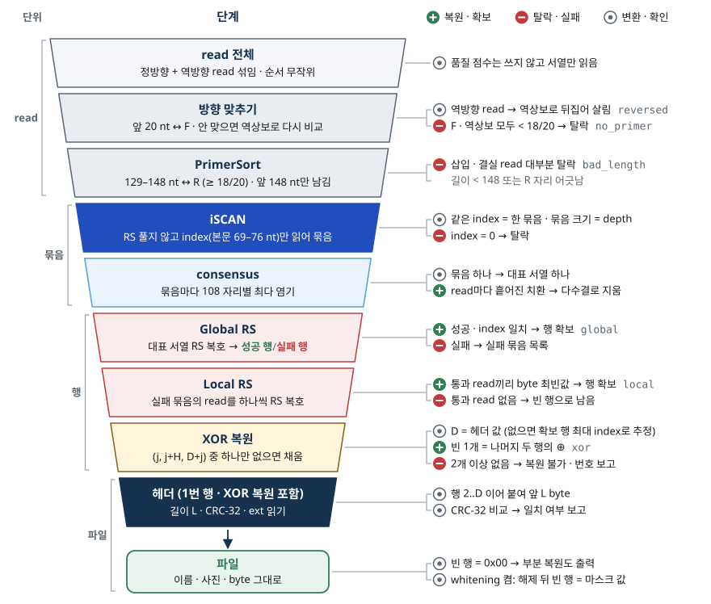
복호 보고 항목
- read 총수 · 역방향 수 ·
no_primer·bad_length - 묶음 수 · 기대 가닥 수 N · 복원 경로별 수 (
global·local·xor) - 끝내 없는 가닥 번호 · CRC 일치 여부 · type · ext · L · SHA-256
STL_Decode_231213.m · Fastq Function3/ · DNAS-1 설계서 §9
코드
match(a, b)= 같은 자리 같은 글자 수 → 위치 고정 비교 (정렬 없음)- 역상보: 뒤집기 + A↔T, G↔C
- 반환
None= 버림 (보고서의no_primer·bad_length)
def match(a, b): # 같은 자리 같은 글자 수
return sum(x == y for x, y in zip(a, b))
def rc(s): # 역상보
return s[::-1].translate(str.maketrans("ATGC", "TACG"))
def orient_and_trim(read):
if match(read[:20], F) < 18: # 정방향 아님 → 역상보로 다시
read = rc(read)
if match(read[:20], F) < 18:
return None # no_primer
if len(read) < 148 or match(read[128:148], R) < 18:
return None # bad_length (삽입 · 결실 read 대부분)
return read[:148]
reads.append(rc(oligo)) # 역방향 read 하나 추가
reads.append(oligo[:60] + oligo[61:]) # 결실 read 하나 추가
trimmed = [t for t in map(orient_and_trim, reads) if t]
print(len(reads), "→", len(trimmed)) # 7 → 6전체 구현: 10.7 복호
8. consensus와 RS 복호
개념
iSCAN — 정렬 없이 index 자리만 읽기
- 3단계를 통과한 read = 148 nt · 프라이머 제자리 → index는 항상 89–96번 nt
- 8 nt → 2 byte → uint16 → 묶음 번호 (0이면 버림)
- 서열 정렬(alignment) 없음 → read 수에 비례하는 분류
- 한계: index 자리 치환 → 엉뚱한 묶음으로 분류 → 그 묶음의 소수 read → consensus에서 희석, Local RS의 index 검사에서 제외 · coverage 1–2에서는 그 가닥 자체가 소실될 수 있음
consensus
- 묶음마다 본문 108 자리 각각 A/T/G/C 개수 → 최다 염기
- 동률 → ATGC 순서의 앞 글자
- read마다 다른 자리의 치환 → 다수결로 제거 · depth 1–2에서는 다수결 불가
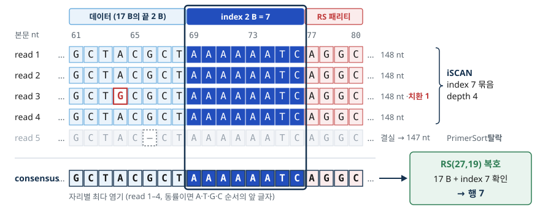
Global RS
- consensus 본문 108 nt → 27 byte → RS 복호
- 성공 + 복호된 index(메시지 18–19번째 byte) = 묶음 index → 행 확보 (
global) - 실패 또는 index 불일치 → Local RS 대상
Local RS
- Global RS 실패 묶음의 read를 하나씩 RS 복호 (
STL_Decode_231213.mLRS 섹션 282–292행) - 통과 + index 일치 read들의 17 byte → byte 자리별 최빈값 (동률이면 작은 값) → 행 확보 (
local) - consensus가 실패해도 오류 4 byte 이하 read가 있으면 복원
오정정과 index 검사
- 오류 5 byte 이상 → RS가 실패를 알리지 못하고 다른 부호어로 “성공”하는 경우 존재 (오정정)
- 방어 1: 복호된 index ≠ 묶음 index → 버림
- 방어 2: 파일 전체 CRC-32 비교 (9절)
Consensus2.m · Binarization.m · RSdecoding.m · STL_Decode_231213.m 282–292행
코드
- iSCAN:
read[88:96](Python 0부터 → 89–96번 nt) → 2 byte →int.from_bytes(…, "big") - 묶음:
defaultdict(list)— index → read 목록 - consensus: 자리별
Counter· MATLAB은 A/T/G/C 개수 행렬 4 × 108 →max - 아래 결과의 12290: index 자리에 치환이 난 read 1개가 만든 묶음 → 실제 복호에서 RS index 검사로 제외
from collections import Counter, defaultdict
def dna_to_bytes(s): # 4 nt → 1 byte ('N' 등은 A)
v = ["ATGC".find(c) if c in "ATGC" else 0 for c in s]
return bytes(v[i] << 6 | v[i+1] << 4 | v[i+2] << 2 | v[i+3]
for i in range(0, len(v), 4))
groups = defaultdict(list) # iSCAN: index 자리만 읽어 묶기
for read in trimmed:
idx = int.from_bytes(dna_to_bytes(read[88:96]), "big") # 89–96번 nt
if idx >= 1:
groups[idx].append(read[20:128]) # 본문 108 nt
def consensus(reads): # 자리별 최다 염기, 동률은 ATGC 순
out = ""
for col in zip(*reads):
c = Counter(col)
out += max("ATGC", key=lambda b: (c[b], -"ATGC".index(b)))
return out
cons = consensus(groups[2])
print(sorted(groups), cons == oligo[20:128]) # [2, 12290] True
# 12290 = index 자리에 치환이 난 read 1개가 만든 엉뚱한 묶음reads = ['ATGCA'; 'ATGGA'; 'TTGCA']; % 같은 index 묶음 (5 nt 예)
B = 'ATGC';
cnt = zeros(4, size(reads, 2));
for k = 1:4
cnt(k, :) = sum(reads == B(k), 1); % 자리별 A/T/G/C 개수
end
[~, best] = max(cnt, [], 1); % 동률이면 앞 글자 (ATGC 순)
cons = B(best) % 'ATGCA'전체 구현: 10.7 복호
9. XOR 복원과 파일 조립
개념
배치 결정
- 헤더(1번 행) 확보 → version = 1 확인 → D, H = D / 2, N = 3H
- 헤더 없음 → RS로 확보된 행(global · local)의 최대 index 사용 → H = ⌈최대 index / 3⌉, D = 2H로 추정 · iSCAN 묶음 번호 아님 (8절 12290 같은 가짜 묶음 → H = 4097로 틀어짐)
- 추정이 맞는 범위: 마지막 가닥 N = 3H가 RS로 확보 → 정확 · 끝 가닥 2개(N, N−1)까지 못 얻어도 ⌈(3H − 2) / 3⌉ = H
XOR 복원
- j = 1…H: (행 j, 행 j+H, XOR 행 D+j) 중 정확히 하나만 없으면 나머지 둘의 XOR로 채움 (
xor) - 헤더가 이 단계에서 복원 → 헤더의 D로 배치 재계산 후 한 번 더
- 2개 이상 없는 묶음 → 복원 실패 → 보고서에 가닥 번호
파일 조립 · 확인
- 행 2…D 연결 (없는 행 = 0x00 17개)
- whitening flag = 1 → 같은 마스크로 XOR 해제
- 앞 L byte만 취함 → PAD 제거
- CRC-32: 복원 byte로 다시 계산 → 헤더 값과 비교 → 일치 = 복원 성공 판정 (우연 일치 확률 약 2⁻³²)
- SHA-256: 파일의 256 bit 지문 → 원본 파일 · 다른 실행 결과와 대조
- 검산:
crc32("123456789")=0xCBF43926
부분 복원된 사진이 깨져 보이는 이유
- 없는 행 = 0x00 → 파일 중간 17 byte 구간이 0으로 바뀜 (whitening 켬: 해제 뒤 0x00 ⊕ 마스크 = 마스크 값)
- JPEG 압축 데이터 = 가변 길이 부호(허프만)의 연속 → 한 구간 손상 → 그 뒤 해석 어긋남 → 손상 지점 아래 색 번짐 · 회색 블록
- 앞쪽 행(JPEG 머리 부분 · 표) 손상 → 파일 자체가 열리지 않음
- 텍스트: 해당 17 byte만 깨짐 (UTF-8 한글은 3 byte 경계 손상 시 � 표시)
- 압축 형식일수록 1 byte 손상의 영향 범위가 넓음 → 오류정정의 필요성
XORrun2.m · DNAS-1 설계서 §7 · §9
코드
- 없는 행 =
None(Python 조각 기준) trio.count(None) != 1→ 건너뜀 (0개 = 이미 있음, 2개 이상 = 복원 불가)- CRC-32 비교: 헤더 byte 6–9 (big-endian)
- SHA-256: Python
hashlib.sha256
import hashlib, zlib
def xor_fill(rows, xr, H): # 없는 행 = None
for j in range(H):
trio = [rows[j], rows[j + H], xr[j]]
if trio.count(None) != 1: # 정확히 하나만 없을 때만
continue
a, b = [t for t in trio if t is not None]
v = bytes(x ^ y for x, y in zip(a, b))
k = trio.index(None)
if k == 0: rows[j] = v
elif k == 1: rows[j + H] = v
else: xr[j] = v
got, xr = list(rows), list(xor_rows)
got[1] = None # 행 2 소실 가정
xor_fill(got, xr, H)
out = b"".join(r or bytes(17) for r in got[1:])[:L] # 앞 L byte
crc_ok = zlib.crc32(out) == int.from_bytes(got[0][6:10], "big")
print(out, crc_ok) # b'SONG' True
print(hashlib.sha256(out).hexdigest())전체 구현: 10.7 복호
10. 코드 설명
개념
- 세 구현 = 같은 설계서(DNAS-1) · 같은 함수 이름 체계
- Python
dnastore.py· MATLABdnas_*.m· JavaScriptdnastore.js(웹 도구 내부) - 교차 검증: 같은 입력의 FASTA · 같은 seed의 read · 복호 보고가 세 언어에서 byte 단위로 같음
표 14. 세 언어 API 대응 (DNAS-1 설계서 §10)
| 기능 | Python dnastore.py | MATLAB | JS dnastore.js |
|---|---|---|---|
| 텍스트 → byte | text_bytes(s) | dnas_text_bytes(s) | textBytes(s) |
| 사진 → byte | image_bytes(path, max_side=64, quality=60, gray=False) | dnas_image_bytes(file, maxSide, quality, gray) | imageBytes(file, opts) |
| 인코딩 | encode(data, dtype="file", ext="bin", whiten=False, f=F, r=R) | oligos = dnas_encode(bytes, type, ext, whiten, F, R) | encode(bytes, opts) |
| FASTA | to_fasta(oligos) read_sequences(text) | dnas_write_fasta(file, oligos) dnas_read_seqs(file) | toFasta readSequences |
| 채널 | simulate(oligo_seqs, seed=1, coverage=10, p_drop=0, p_sub=0, p_ins=0, p_del=0, p_rc=0.5, drop=(), shuffle=True) | dnas_simulate(seqs, opts) | simulate(seqs, opts) |
| 복호 | decode(reads, f=F, r=R) → (data, header, report) | [data, hdr, rep] = dnas_decode(reads, F, R) | decode(reads, opts) |
| RS | rs_encode(msg, nsym=8) rs_decode(cw, nsym=8) | dnas_rs_encode dnas_rs_decode | rsEncode rsDecode |
| CRC | crc32(b) | dnas_crc32(b) | crc32(b) |
코드
전체 흐름 한 번에
from dnastore import text_bytes, encode, to_fasta, simulate, decode
data = text_bytes("송영준") # 1. 입력 → byte (UTF-8)
oligos = encode(data, dtype="text", ext="txt") # 2–5. 행 · XOR · RS · DNA
print(to_fasta(oligos)) # (index, role, seq) 목록 → FASTA
reads = simulate([seq for _, _, seq in oligos],
seed=7, coverage=10, p_sub=0.01, drop=[3]) # 6. 채널
out, header, report = decode(reads) # 7–9. 복호
print(out.decode("utf-8"), report)10.1 입력 → byte
이 코드가 하는 일
- 문자열 → UTF-8 byte (
text_bytes·dnas_text_bytes·textBytes) - 사진 → 긴 변 축소 + JPEG 재저장 byte, 흑백 선택 (
image_bytes·dnas_image_bytes·imageBytes) - 파일 → byte 그대로, 확장자 소문자 4자 이내
- 결과 = byte 열 + type 코드(0 file · 1 text · 2 image) + ext → 인코딩 함수 입력
설명: 1. 입력 → byte
10.2 헤더 · 행 나누기
이 코드가 하는 일
- 헤더 17 byte 조립: version · type · L · CRC-32 · D · flags · ext
- 파일 byte를 17 byte씩 행 2…D로 분할, 마지막 빈자리 PAD 0x1B
- D 홀수 → PAD 17개 행 추가 (짝수 보정)
- whitening 켜짐 → 행 2…D에 행 번호별 LCG 마스크 XOR
def split_rows(data, dtype="file", ext="bin", whiten=False):
"""원본 cCal/column_data와 KIS: 헤더 + 17 byte 행 나누기."""
data = bytes(data)
type_code = TYPE_CODES.get(dtype, dtype)
if type_code not in TYPE_NAMES:
raise ValueError("dtype은 file, text, image 또는 0, 1, 2입니다.")
count = 1 + (len(data) + ROW_BYTES - 1) // ROW_BYTES
count += count % 2
if count * 3 // 2 > 65535:
raise ValueError("DNAS-1 최대 가닥 수 65,535를 넘었습니다.")
header = (bytes((1, type_code)) + len(data).to_bytes(4, "big")
+ crc32(data).to_bytes(4, "big")
+ count.to_bytes(2, "big") + bytes((int(bool(whiten)),))
+ _extension(ext))
rows = [header]
for start in range(0, len(data), ROW_BYTES):
rows.append(data[start:start + ROW_BYTES].ljust(ROW_BYTES,
bytes((PAD,))))
while len(rows) < count:
rows.append(bytes((PAD,)) * ROW_BYTES)
if whiten:
rows[1:] = [xor_bytes(row, whitening_mask(number))
for number, row in enumerate(rows[1:], 2)]
return rows
def whitening_mask(row_number):
"""선택 기능(whitening): 행 번호로 재현 가능한 마스크."""
state, mask = row_number, bytearray()
for _ in range(ROW_BYTES):
state = (1664525 * state + 1013904223) & 0xFFFFFFFF
mask.append(state >> 24)
return bytes(mask)column_data = reshape(uint8(bytes), 1, []);
L = numel(column_data);
D = max(2, 2*ceil((1 + ceil(L/17)) / 2));
H = D/2; N = D + H;
assert(N <= 65535, 'DNAS-1 supports at most 65535 strands.');
ext = lower(char(ext));
ext = ext(1:min(4, numel(ext)));
assert(all(double(ext) <= 127), 'Extension must be ASCII.');
ext(end + 1:4) = ' ';
header = uint8([1 type be(L, 4) be(dnas_crc32(bytes), 4) ...
be(D, 2) logical(whiten) double(ext)]);
rows = repmat(c.PAD, N, 17);
rows(1,:) = header;
for row = 2:D
start = (row - 2)*17 + 1;
count = min(17, max(0, L - start + 1));
rows(row, 1:count) = column_data(start:start + count - 1);
if whiten, rows(row,:) = dnas_whiten(rows(row,:), row); end
end
function row = dnas_whiten(row, index)
% 원본의 반복 무늬를 비교하는 선택 확장: 같은 XOR로 해제한다.
x = double(index);
mask = zeros(1, numel(row), 'uint8');
for k = 1:numel(row)
x = mod(1664525*x + 1013904223, 2^32);
mask(k) = uint8(floor(x / 2^24));
end
row = bitxor(uint8(row), mask);
end설명: 2. 헤더와 행 나누기
10.3 XOR
이 코드가 하는 일
- H = D / 2 계산
- Pj = 행 j ⊕ 행 j+H (byte별 XOR, whitening 뒤 byte 기준)
- 가닥 번호 부여: 1…D 데이터(1 = header), D+1…N XOR
- role 표시:
header·data·xor
def encode(data, dtype="file", ext="bin", whiten=False, f=F, r=R):
"""원본 STL_Encode: 행 → xor_data → nrsin → DNA_library."""
f, r = _primers(f, r)
rows = split_rows(data, dtype, ext, whiten)
count, half = len(rows), len(rows) // 2
xor_data = [xor_bytes(rows[j], rows[j + half]) for j in range(half)]
oligos = []
for index, row in enumerate(rows + xor_data, 1):
role = "header" if index == 1 else "data" if index <= count else "xor"
nrsin = row + index.to_bytes(IDX_BYTES, "big")
sequence = f + bytes_to_dna(rs_encode(nrsin)) + r
oligos.append(Oligo(index, role, sequence))
return oligos
def _restore_xor(rows, statuses, count):
"""원본 XORrun2: 세 행 중 하나만 없을 때 두 행으로 복원."""
half = count // 2
for j in range(1, half + 1):
triplet = (j, j + half, count + j)
missing = [index for index in triplet if index not in rows]
if len(missing) == 1:
available = [index for index in triplet if index in rows]
rows[missing[0]] = xor_bytes(rows[available[0]], rows[available[1]])
statuses[missing[0]] = "xor"xor_A = rows(1:H,:); xor_B = rows(H + 1:D,:);
xor_data = bitxor(xor_A, xor_B);
rows(D + 1:N,:) = xor_data;
function [rows, present, status, count] = ...
xor_rows(rows, present, status, D)
% 원본 XORrun2: xor_A ⊕ xor_B = xor_data 관계를 역으로 사용한다.
H = D/2;
count = 0;
for j = 1:H
triple = [j j + H D + j];
missing = triple(~present(triple));
if numel(missing) ~= 1, continue; end
have = triple(present(triple));
rows(missing,:) = bitxor(rows(have(1),:), rows(have(2),:));
present(missing) = true;
status{missing} = 'xor';
count = count + 1;
end설명: 3. XOR 넣기
10.4 RS
이 코드가 하는 일
- GF(2⁸) 지수 · 로그 표 생성 (0x11D, α = 2)
rs_encode: 생성 다항식(fcr = 1) → 나머지 계산 → 패리티 8 byters_decode: 신드롬 → Berlekamp–Massey → Chien 탐색 → Forney → 신드롬 재검사- 실패 조건: 오류 위치 > 4 · 근 개수 ≠ 오류 위치 다항식 차수 · 위치가 부호어 밖 · 재검사 신드롬 ≠ 0
- 반환: (메시지 19 byte, 고친 byte 수) 또는 실패
def _gf_tables():
"""원본 gf(...,8)에 해당: 0x11D로 log/antilog 표 생성."""
exp, log = [0] * 512, [0] * 256
value = 1
for power in range(255):
exp[power], log[value] = value, power
value <<= 1
if value & 256:
value ^= 0x11D
for power in range(255, 512):
exp[power] = exp[power - 255]
return exp, log
def _mul(a, b):
"""원본 gf 곱셈에 해당: GF(256) 곱셈."""
return _EXP[_LOG[a] + _LOG[b]] if a and b else 0
def _generator(nsym):
"""원본 rsenc 생성 다항식: (x+α¹)…(x+αⁿˢʸᵐ)."""
polynomial = [1]
for power in range(1, nsym + 1):
following = [0] * (len(polynomial) + 1)
for index, coefficient in enumerate(polynomial):
following[index] ^= coefficient
following[index + 1] ^= _mul(coefficient, _EXP[power])
polynomial = following
return polynomial
def rs_encode(msg, nsym=NSYM):
"""원본 rsenc 대응: byte 심볼 RS, 패리티를 뒤에 붙임."""
message = bytes(msg)
_check_rs_size(len(message) + nsym, nsym)
generator = _generator(nsym)
remainder = list(message) + [0] * nsym
for index in range(len(message)):
coefficient = remainder[index]
if coefficient:
for offset in range(1, len(generator)):
remainder[index + offset] ^= _mul(
coefficient, generator[offset])
return message + bytes(remainder[-nsym:])def _syndromes(codeword, nsym):
"""원본 RSdecoding의 신드롬: r(α¹), …, r(αⁿˢʸᵐ)."""
return [_poly_eval_desc(codeword, _EXP[power])
for power in range(1, nsym + 1)]
def _error_locator(syndromes):
"""원본 rsdec 내부에 해당: Berlekamp–Massey 위치 다항식."""
size = len(syndromes)
locator, previous = [1] + [0] * size, [1] + [0] * size
degree, shift, old_discrepancy = 0, 1, 1
for step in range(size):
discrepancy = syndromes[step]
for offset in range(1, degree + 1):
discrepancy ^= _mul(locator[offset], syndromes[step - offset])
if not discrepancy:
shift += 1
continue
saved = locator[:]
scale = _div(discrepancy, old_discrepancy)
for offset in range(size + 1 - shift):
locator[offset + shift] ^= _mul(scale, previous[offset])
if 2 * degree <= step:
degree = step + 1 - degree
previous, old_discrepancy, shift = saved, discrepancy, 1
else:
shift += 1
return locator[:degree + 1]
def rs_decode(cw, nsym=NSYM):
"""원본 RSdecoding: BM → Chien → Forney, 실패는 None."""
codeword = list(bytes(cw))
if not isinstance(nsym, int) or not 1 <= nsym <= 254:
return None
if len(codeword) < nsym or len(codeword) > 255:
return None
syndromes = _syndromes(codeword, nsym)
if not any(syndromes):
return bytes(codeword[:-nsym]), 0
locator = _error_locator(syndromes)
degree = len(locator) - 1
if degree == 0 or degree > nsym // 2:
return None
# Chien: 앞 byte가 최고차 계수이므로 위치 지수는 n-1-p.
roots = []
for position in range(len(codeword)):
root = _EXP[-(len(codeword) - 1 - position) % 255]
if _poly_eval_asc(locator, root) == 0:
roots.append((position, root))
if len(roots) != degree:
return None
# Ω(z) = S(z)Λ(z) mod z^nsym, fcr=1이므로 크기는 Ω/Λ'.
evaluator = [0] * nsym
for i, coefficient in enumerate(locator):
for j in range(nsym - i):
evaluator[i + j] ^= _mul(coefficient, syndromes[j])
derivative = [locator[i] if i % 2 else 0
for i in range(1, len(locator))]
for position, root in roots:
denominator = _poly_eval_asc(derivative, root)
if not denominator:
return None
codeword[position] ^= _div(
_poly_eval_asc(evaluator, root), denominator)
if any(_syndromes(codeword, nsym)):
return None
return bytes(codeword[:-nsym]), degreefunction [expTable, logTable] = dnas_gf()
% 원본 rsenc/gf 부분: GF(256) 표를 직접 만든다.
% alpha=2, primitive=0x11D. 지수/로그의 값에 1을 더해 첨자 사용.
persistent powers logs
if isempty(powers)
powers = zeros(1, 512);
logs = -ones(1, 256);
value = 1;
for power = 0:254
powers(power + 1) = value;
logs(value + 1) = power;
value = value * 2;
if value >= 256
value = bitxor(value, hex2dec('11D'));
end
end
for power = 255:511
powers(power + 1) = powers(mod(power, 255) + 1);
end
end
expTable = powers;
logTable = logs;
end
function codeword = dnas_rs_encode(message, nsym)
% 원본 nrsin/rsenc 단계: byte를 GF(256) 심볼로 넣는다.
if nargin < 2
nsym = 8;
end
message = double(message(:).');
if ~isscalar(nsym) || nsym < 1 || nsym > 254 || fix(nsym) ~= nsym
error('DNAS:RS', 'nsym은 1..254 정수여야 합니다.');
end
if numel(message) + nsym > 255 || any(~isfinite(message)) || ...
any(message < 0 | message > 255 | fix(message) ~= message)
error('DNAS:RS', '총 255 심볼 이하의 byte를 입력하세요.');
end
[powers, logs] = dnas_gf();
generator = 1;
for root = 1:nsym
shifted = [0 multiply(generator, powers(root + 1), powers, logs)];
generator = bitxor([generator 0], shifted);
end
work = [message zeros(1, nsym)];
for index = 1:numel(message)
coefficient = work(index);
if coefficient ~= 0
span = index + (1:nsym);
product = multiply(generator(2:end), coefficient, powers, logs);
work(span) = bitxor(work(span), product);
end
end
codeword = uint8([message work(numel(message) + 1:end)]);
end
function product = multiply(values, value, powers, logs)
% 원본 gf 곱셈: log/antilog로 툴박스 없이 계산한다.
product = zeros(size(values));
nonzero = values ~= 0 & value ~= 0;
if any(nonzero)
exponents = logs(values(nonzero) + 1) + logs(value + 1);
product(nonzero) = powers(exponents + 1);
end
end설명: 4. RS 넣기
10.5 DNA · FASTA
이 코드가 하는 일
- 부호어 27 byte → 108 nt (MSB부터, ATGC)
- F ‖ 108 nt ‖ R → 148 nt 가닥
- FASTA: 가닥마다
>dnas_%04d idx= role= len=+ 서열 한 줄 - 역변환: 4 nt → 1 byte, ATGC 외 글자는 A
def bytes_to_dna(data):
"""원본 STL_Encode의 bases='ATGC': byte 내부는 MSB-first."""
return "".join(BASES[(b >> shift) & 3]
for b in data for shift in (6, 4, 2, 0))
def dna_to_bytes(sequence):
"""원본 Binarization: ATGC 외 문자는 A(00)로 취급."""
if len(sequence) % 4:
raise ValueError("DNA 본문 길이는 4의 배수여야 합니다.")
values = {base: index for index, base in enumerate(BASES)}
output = bytearray()
for start in range(0, len(sequence), 4):
value = 0
for base in sequence[start:start + 4]:
value = (value << 2) | values.get(base, 0)
output.append(value)
return bytes(output)
def to_fasta(oligos):
"""원본 DNA_library 출력: 줄바꿈까지 고정한 FASTA."""
return "".join(f">dnas_{index:04d} idx={index} role={role} "
f"len={len(seq)}\n{seq}\n" for index, role, seq in oligos)function seq = dnas_bytes_to_dna(bytes)
% 원본 bin_payload → DNA: byte 안에서는 MSB부터 2 bit씩 읽는다.
bases = 'ATGC';
b = double(reshape(bytes, 1, []));
v = zeros(4, numel(b));
for k = 1:4
v(k,:) = mod(floor(b / 2^(8 - 2*k)), 4);
end
seq = bases(reshape(v, 1, []) + 1);
end
oligos = repmat(struct('index', 0, 'role', '', 'seq', ''), 1, N);
for index = 1:N
nrsin = [rows(index,:) uint8(be(index, 2))];
bin_payload = dnas_rs_encode(nrsin);
DNA_library = [F dnas_bytes_to_dna(bin_payload) R];
role = 'data';
if index == 1, role = 'header'; end
if index > D, role = 'xor'; end
oligos(index) = struct('index', index, 'role', role, ...
'seq', DNA_library);
end설명: 5. DNA로 바꾸기
10.6 채널
이 코드가 하는 일
- LCG 난수 생성 (seed)
- 가닥마다: 소실 판정 → 복사 수 1…2c−1 → 염기별 결실 · 삽입 · 치환 → 방향(p_rc)
- 마지막에 read 순서 섞기 (뒤에서부터 교환)
- FASTQ 출력:
@read_%d, 품질 'I'
class LCG:
"""원본 실험 read 대신 사용하는 재현 가능한 교육용 채널 난수."""
def __init__(self, seed):
"""원본 채널의 교육용 확장: seed를 32 bit 상태로 저장."""
self.state = int(seed) & 0xFFFFFFFF
def next(self):
"""원본 채널의 교육용 확장: SPEC의 LCG 한 번 진행."""
self.state = (1664525 * self.state + 1013904223) & 0xFFFFFFFF
return self.state / 4294967296
def simulate(oligo_seqs, seed=1, coverage=10, p_drop=0, p_sub=0,
p_ins=0, p_del=0, p_rc=0.5, drop=(), shuffle=True):
"""원본 시퀀싱 입력의 교육용 모사: 소실·치환·삽입·결실."""
if not isinstance(coverage, int) or coverage < 1:
raise ValueError("coverage는 1 이상의 정수여야 합니다.")
if any(not 0 <= p <= 1 for p in (p_drop, p_sub, p_ins, p_del, p_rc)):
raise ValueError("각 확률은 0..1이어야 합니다.")
if p_sub + p_ins + p_del > 1:
raise ValueError("p_sub + p_ins + p_del은 1 이하여야 합니다.")
rng, reads, dropped = LCG(seed), [], set(drop)
for index, oligo in enumerate(oligo_seqs, 1):
sequence = oligo.seq if isinstance(oligo, Oligo) else str(oligo)
u = rng.next()
if index in dropped or u < p_drop:
continue
copies = 1 + int(rng.next() * (2 * coverage - 1))
for _ in range(copies):
read = []
for base in sequence:
u = rng.next()
if u < p_del:
continue
if u < p_del + p_ins:
read.extend((base, BASES[int(rng.next() * 4)]))
elif u < p_del + p_ins + p_sub:
others = BASES.replace(base, "")
read.append(others[int(rng.next() * 3)])
else:
read.append(base)
sequence_read = "".join(read)
if rng.next() < p_rc:
sequence_read = reverse_complement(sequence_read)
reads.append(sequence_read)
if shuffle:
for k in range(len(reads) - 1, 0, -1):
j = int(rng.next() * (k + 1))
reads[k], reads[j] = reads[j], reads[k]
return readsfunction reads = dnas_simulate(seqs, opts)
% 원본 FASTQ read를 대신하는 재현 가능한 오류 채널이다.
if nargin < 2, opts = struct(); end
if isstruct(seqs), seqs = {seqs.seq}; end
if isstring(seqs), seqs = cellstr(seqs); end
if ischar(seqs), seqs = cellstr(seqs); end
seed = option('seed', 1);
coverage = option('coverage', 10);
p_drop = option('p_drop', 0);
p_sub = option('p_sub', 0);
p_ins = option('p_ins', 0);
p_del = option('p_del', 0);
p_rc = option('p_rc', 0.5);
drop = option('drop', []);
shuffle = option('shuffle', true);
assert(coverage >= 1 && coverage == floor(coverage));
p = [p_drop p_sub p_ins p_del p_rc];
assert(all(p >= 0 & p <= 1) && p_sub + p_ins + p_del <= 1);
x = mod(fix(double(seed)), 2^32);
bases = 'ATGC';
reads = cell(1, numel(seqs)*(2*coverage - 1));
count = 0;
for index = 1:numel(seqs)
u = next();
if ismember(index, drop) || u < p_drop, continue; end
copies = 1 + floor(next() * (2*coverage - 1));
seq = char(seqs{index});
for copy = 1:copies
read = repmat('A', 1, 2*numel(seq));
len = 0;
for b = seq
u = next();
if u < p_del
continue;
elseif u < p_del + p_ins
read(len + 1:len + 2) = [b bases(floor(next()*4) + 1)];
len = len + 2;
elseif u < p_del + p_ins + p_sub
others = bases(bases ~= b);
len = len + 1;
read(len) = others(floor(next()*3) + 1);
else
len = len + 1;
read(len) = b;
end
end
read = read(1:len);
if next() < p_rc, read = dnas_reverse_complement(read); end
count = count + 1;
reads{count} = read;
end
end
reads = reads(1:count);
if shuffle
for k = count:-1:2
j = floor(next()*k) + 1;
temp = reads{k}; reads{k} = reads{j}; reads{j} = temp;
end
end
function value = option(key, fallback)
% 원본 채널 입력 설정에 대응하는 수업용 매개변수이다.
value = fallback;
if isfield(opts, key), value = opts.(key); end
end
function u = next()
% 원본 실험 read 대신 공통 LCG 난수를 순서대로 뽑는다.
x = mod(1664525*x + 1013904223, 2^32);
u = x / 2^32;
end
end설명: 6. 채널
10.7 복호
이 코드가 하는 일
- 읽기 → 방향 → 프라이머 정렬 → iSCAN → consensus
- Global RS → Local RS (read별 RS → byte 자리별 최빈값)
- 배치 결정(헤더 또는 RS로 확보한 행의 최대 index) → XOR 복원 (헤더 복원 시 재계산)
- 행 연결 → whitening 해제 → 앞 L byte → CRC-32 · SHA-256
- 보고서 항목 채우기
def _consensus(bodies):
"""원본 Binarization/Consensus2: ATGC 순서로 동률 해결."""
result = []
for column in zip(*bodies):
counts = Counter(column)
result.append(max(BASES, key=lambda base: counts[base]))
return "".join(result)
def _byte_consensus(rows):
"""원본 Local RS의 최빈값: 동률이면 작은 byte 선택."""
output = bytearray()
for column in zip(*rows):
counts = Counter(column)
output.append(min(counts, key=lambda value: (-counts[value], value)))
return bytes(output)
def decode(reads, f=F, r=R):
"""원본 STL_Decode: 방향 → 묶음 → Global/Local RS → XOR."""
f, r = _primers(f, r)
reads = read_sequences(reads) if isinstance(reads, str) else list(reads)
total_length = len(f) + BODY_NT + len(r)
groups, rows, statuses = {}, {}, {}
report = {"reads": len(reads), "reversed": 0, "no_primer": 0,
"bad_length": 0, "invalid_index": 0, "groups": 0,
"expected": 0, "global": 0, "local": 0, "xor": 0,
"missing": [], "crc_ok": False, "type": -1,
"ext": "", "length": 0, "sha256": "", "status": []}
for raw in reads:
sequence = _clean_sequence(raw)
if _matches(sequence[:len(f)], f) < len(f) - 2:
sequence = reverse_complement(sequence)
if _matches(sequence[:len(f)], f) < len(f) - 2:
report["no_primer"] += 1
continue
report["reversed"] += 1
reverse_start = len(f) + BODY_NT
if (len(sequence) < total_length
or _matches(sequence[reverse_start:total_length], r)
< len(r) - 2):
report["bad_length"] += 1
continue
body = sequence[len(f):reverse_start]
index = int.from_bytes(dna_to_bytes(body[68:76]), "big")
if not 1 <= index <= 65535:
report["invalid_index"] += 1
continue
groups.setdefault(index, []).append(body)
report["groups"] = len(groups)
for index in sorted(groups):
bodies = groups[index]
corrected = rs_decode(dna_to_bytes(_consensus(bodies)))
if corrected is not None and int.from_bytes(corrected[0][17:19], "big") == index:
rows[index], statuses[index] = corrected[0][:17], "global"
continue
local_rows = []
for body in bodies:
corrected = rs_decode(dna_to_bytes(body))
if corrected is not None and int.from_bytes(corrected[0][17:19], "big") == index:
local_rows.append(corrected[0][:17])
if local_rows:
rows[index], statuses[index] = _byte_consensus(local_rows), "local"
header = None
if 1 in rows:
try:
header = parse_header(rows[1])
except ValueError:
pass
count = header["D"] if header else 2 * ((max(rows, default=0) + 2) // 3)
if count:
_restore_xor(rows, statuses, count)
if header is None and 1 in rows:
try:
header = parse_header(rows[1])
count = header["D"]
_restore_xor(rows, statuses, count)
except ValueError:
pass
expected = count * 3 // 2
report["expected"] = expected
report["missing"] = [index for index in range(1, expected + 1)
if index not in rows]
report["status"] = [statuses.get(index, "missing")
for index in range(1, expected + 1)]
for method in ("global", "local", "xor"):
report[method] = sum(value == method for value in statuses.values())
if header is None:
report["sha256"] = hashlib.sha256(b"").hexdigest()
return b"", None, report
data_rows = []
for index in range(2, count + 1):
row = rows.get(index, bytes(ROW_BYTES))
if header["flags"] & 1:
row = xor_bytes(row, whitening_mask(index))
data_rows.append(row)
data = b"".join(data_rows)[:header["length"]]
report.update({"crc_ok": crc32(data) == header["crc32"],
"type": header["type"], "ext": header["ext"],
"length": header["length"],
"sha256": hashlib.sha256(data).hexdigest()})
return data, header, reportfunction [data, hdr, rep] = dnas_decode(reads, F, R)
% 원본 STL_Decode: 방향 → PrimerSort → RS → XORrun → 파일.
c = dnas_constants();
if nargin < 2, F = c.F; end
if nargin < 3, R = c.R; end
F = upper(char(F)); R = upper(char(R));
assert(~isempty(F) && all(ismember(F, c.BASES)), 'Invalid F primer.');
assert(~isempty(R) && all(ismember(R, c.BASES)), 'Invalid R primer.');
if isstruct(reads), reads = {reads.seq}; end
if isstring(reads), reads = cellstr(reads); end
if ischar(reads), reads = dnas_parse_sequences(reads); end
rep = struct('reads', numel(reads), 'reversed', 0, 'no_primer', 0, ...
'bad_length', 0, 'invalid_index', 0, 'groups', 0, 'expected', 0, ...
'global', 0, 'local', 0, 'xor', 0, 'missing', [], ...
'crc_ok', false, 'type', -1, 'ext', '', 'length', 0, ...
'sha256', dnas_sha256(uint8([])), 'status', {{}});
groups = cell(1, 65535);
L = numel(F) + 108 + numel(R);
for k = 1:numel(reads)
seq = upper(regexprep(char(reads{k}), '\s', ''));
seq(seq == 'U') = 'T';
if ~front_match(seq, F)
seq = dnas_reverse_complement(seq);
if ~front_match(seq, F)
rep.no_primer = rep.no_primer + 1;
continue;
end
rep.reversed = rep.reversed + 1;
end
startR = numel(F) + 109;
if numel(seq) < L || ...
sum(seq(startR:L) == R) < numel(R) - 2
rep.bad_length = rep.bad_length + 1;
continue;
end
body = seq(numel(F) + (1:108));
indexBytes = dnas_dna_to_bytes(body(69:76));
index = double(indexBytes(1))*256 + double(indexBytes(2));
if index < 1 || index > 65535
rep.invalid_index = rep.invalid_index + 1;
continue;
end
groups{index}(end + 1,:) = body;
end11. 실행 방법
개념
- 세 경로의 결과 형식 동일: FASTA(가닥) · FASTQ(read) · 복원 파일 · 복호 보고
- 입력 사진의 byte만 경로마다 다를 수 있음 (JPEG 인코더 차이) → 가닥 수 비교는 같은 경로 안에서
코드
웹 도구
- 웹 도구(index.html)를 브라우저(Chrome · Edge · Safari · Firefox)로 열기 → 설치 · 로그인 없음
- 한 파일 HTML · 서버 · 인터넷 불필요 → 내려받아 오프라인 실행 가능
- 4단계: 입력 → 인코딩 → 채널 → 불러오기 · 단계마다 이 설명서의 해당 절 링크
- 인코딩 화면: 가닥 격자(헤더 / 데이터 / XOR 색 구분) · 가닥 하나 선택 → F | 데이터 | index | RS | R 구간 표시
- 채널 화면: 프리셋 무오류 · 보통 · 혹독(값만 채움, 수정 가능) · 격자에서 가닥 클릭 → 강제 소실 (
drop) - 내려받기: FASTA · CSV · FASTQ · 복원 파일

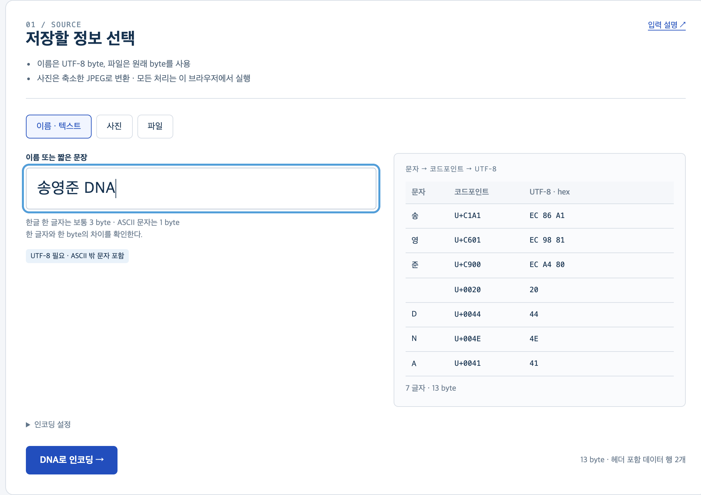

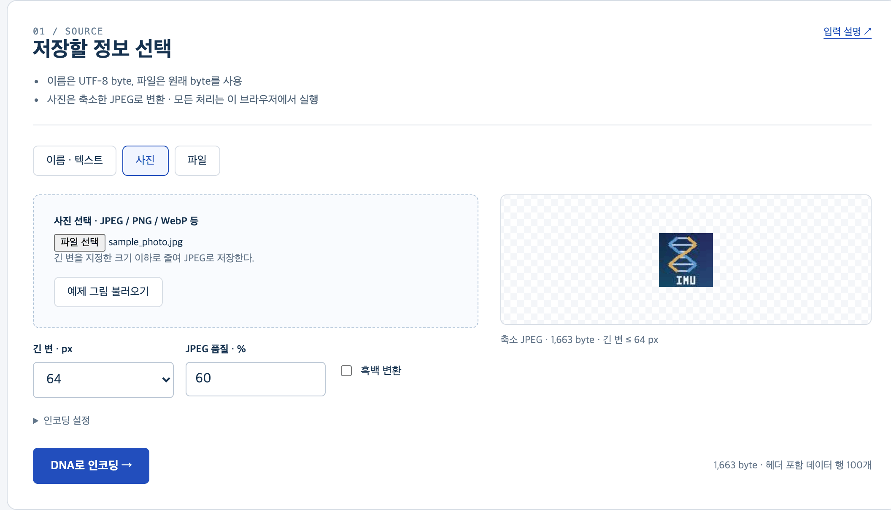

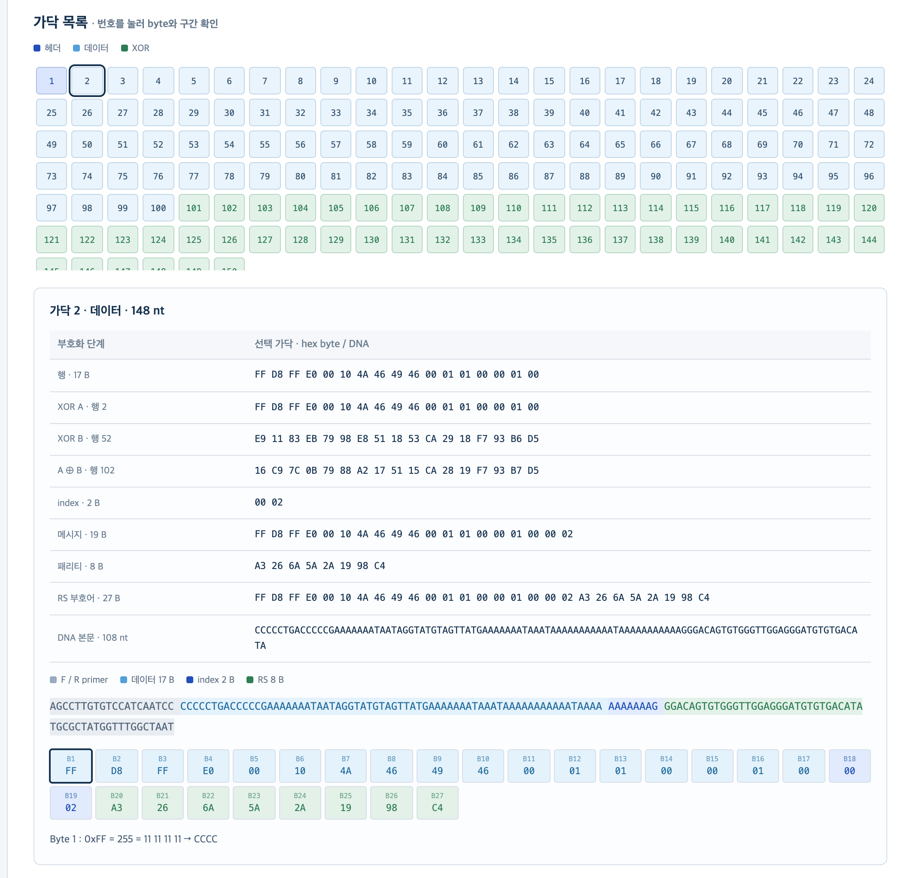

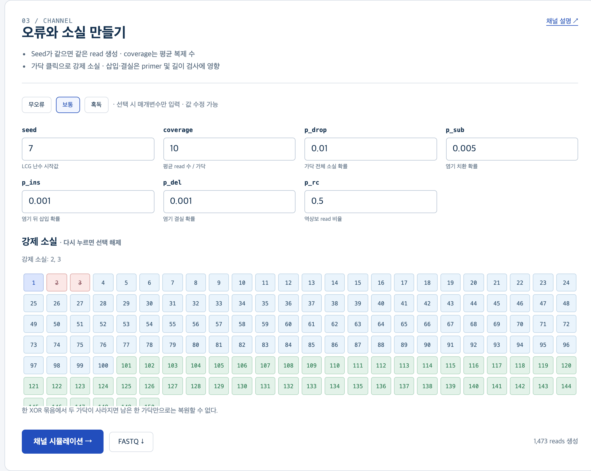

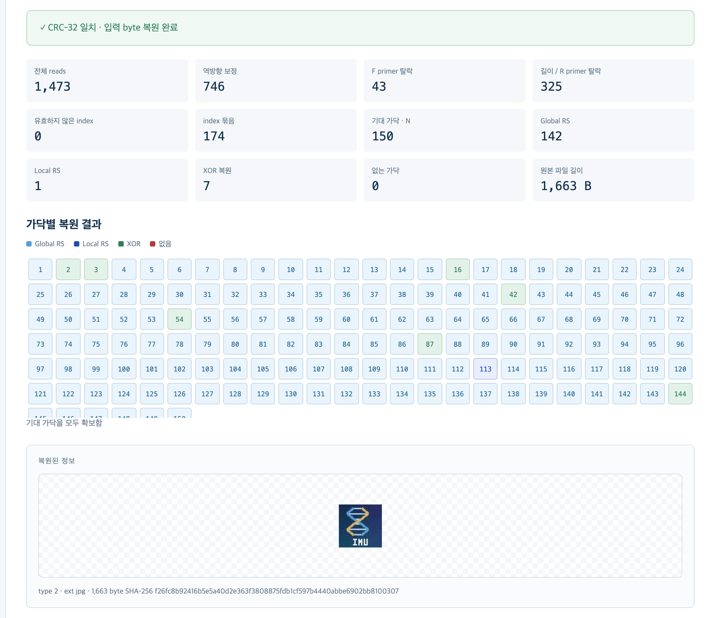
Google Colab (Python)
- Colab에서 바로 열기 (또는 python 폴더의
dna_storage_lab.ipynb를 내려받아 colab.research.google.com → 파일 → 노트북 업로드) - 로컬 · 명령줄용 한 번에 받기: dna-storage-python.zip (dnastore.py · 노트북 · 예시 사진)
- 첫 준비 셀부터 순서대로 실행 (Shift + Enter)
- 입력 셀의 이름 · 사진을 자기 것으로 교체 (사진은 왼쪽 파일 창에 업로드)
- 결과 파일: 왼쪽 파일 창에서 내려받기
- 로컬 실행: Python 3 + (사진만) Pillow · 명령줄 사용 예:
python3 dnastore.py encode --text 송영준 -o name.fasta
python3 dnastore.py encode --image photo.jpg -o photo.fasta
python3 dnastore.py simulate name.fasta -o reads.fastq --seed 7 --coverage 10 --p-sub 0.01 --drop 3
python3 dnastore.py decode reads.fastq -o out.binMATLAB Online
- dna-storage-matlab.zip 내려받기(
dnas_*.m·demo_*.m· 예시 사진) → 압축 해제 → matlab.mathworks.com 접속 → MATLAB Drive에 폴더째 업로드 (파일별 보기: GitHub matlab 폴더) matlab/을 현재 폴더로 지정demo_name→demo_photo→demo_decode순서 ·%%섹션은 Ctrl + Enter로 하나씩- Communications Toolbox 없어도 실행 (RS 직접 구현) · 있으면
rsenc와 대조 가능 - 전체 검산:
run_all
12. 실습 과제
각 과제의 “기록” 항목을 표로 정리 · 매개변수(seed 포함)도 함께 기록
-
이름의 byte 수와 가닥 수
- 영문 이름 · 한글 이름 각각 인코딩
- 한글 1자 = 3 byte 확인 · 한 데이터 가닥(17 byte)에 들어가는 최대 글자 수 확인
기록 L · D · N · 총 nt (148 N) · 헤더 가닥의 최대 호모폴리머
-
사진 해상도와 합성량
- 같은 사진, 긴 변 32 / 64 / 128 px (품질 60 고정) · 컬러와 흑백
- 픽셀 수 증가율과 byte 수 증가율 비교 → 차이의 원인
기록 byte 수 · N · 합성 nt 합계
-
RS 정정 한계
- 가닥 하나의 본문(21–128 nt)에 치환 4개 → RS 복호 · 5개 → RS 복호
- 결과를 성공 · 실패 · 오정정으로 구분 (원래 메시지와 비교)
- 같은 byte(4 nt) 안에 치환 4개 → 심볼 오류 수
기록 치환 수 · 치환 위치 · 고친 byte 수 · 결과
-
XOR 소실 복원
drop으로 서로 다른 묶음의 가닥 2개 지우기 vs 같은 묶음 (j, j+H) 2개 지우기- 헤더 가닥(1번)만 지우기 → 복원 여부
기록 지운 가닥 · xor 복원 수 · 끝내 없는 가닥 · CRC 일치
-
coverage와 복원율
- p_sub 0.01 · p_ins 0.002 · p_del 0.002 · p_drop 0.02, seed 고정, coverage 1 / 3 / 10
- (
no_primer+bad_length) / read 수와 예측 1 − 0.996¹⁴⁸ ≈ 0.45 비교 → 차이의 원인
기록 read 수 · bad_length · global / local / xor 수 · 끝내 없는 가닥 수 · CRC 일치
-
seed와 재현성
- 같은 매개변수 · 같은 seed로 두 번 → FASTQ 동일 여부
- seed 5개 → 복원 결과의 변동 범위
- (선택) 같은 seed로 Python · MATLAB · 웹 결과 비교
기록 seed별 끝내 없는 가닥 수 · CRC 일치
-
whitening과 호모폴리머
- 사진 입력, whitening 끔 · 켬
- 가장 긴 호모폴리머의 가닥 번호 · 구간(데이터 · index · 패리티) 확인
- 헤더 가닥이 whitening 대상이 아닌 이유
기록 최대 호모폴리머 · 전체 GC % · 호모폴리머 6 nt 이상 가닥 수
13. 헤더 없는 복붙 인코딩 · 복호
앞의 DNAS-1 헤더 포함 실습을 보존하는 추가 변형입니다. 입력 byte를 행으로 자르는 단계부터 FASTA까지 한 MATLAB 스크립트에 누적해 실행하고, 별도 스크립트로 복호합니다.
인코딩 순서 · 148 nt strand
- 입력 → byte: 문자열은 UTF-8, 사진과 파일은 선택한 원본 파일의 byte 그대로 읽습니다.
- 행 분할: byte를 17개씩 잘라 데이터 행 D개를 만들고, 마지막 빈 칸은 PAD 0x1B로 채웁니다. D는 짝수로 올립니다.
- XOR 추가: H = D/2. 행 j와 j+H를 byte별 XOR한 parity 행을 D+j 자리에 붙입니다. 총 strand 수 N = D+H입니다.
- 고정 index: 각 17 byte 행 뒤에 strand 순번을 big-endian 2 byte로 붙여 19 byte 메시지를 만듭니다.
- inner RS: 19 byte 메시지에 RS(27,19)를 적용해 8 byte parity를 추가합니다. index도 RS 보호를 받습니다.
- primer + 출력: 27 byte를 MSB부터 2 bit씩 ATGC로 바꾸어 108 nt 본문을 만듭니다. 양쪽 20 nt primer를 붙여 148 nt로 만들고 FASTA와 줄당 1개 sequence인 TXT를 저장합니다.
D = 2⌈⌈L / 17⌉ / 2⌉ · H = D/2 · N = D+H · strand = 20 + 108 + 20 = 148 nt
index는 RS의 19 byte 메시지에 포함됩니다. 이 위치로 108 nt 본문 길이를 유지하면서 RS가 index와 행 데이터를 함께 보호합니다. 여기서 “고정”은 생성 시 순번 1..N을 부여한다는 뜻이며, 오류가 있는 read는 몸체의 RS-protected index로 묶습니다.
복호 순서
FASTA/FASTQ를 읽고 reverse-complement 방향을 확인 → primer 검사 → index로 read 묶기 → 가닥별 consensus → Global RS → read별 Local RS → 각 XOR 묶음에서 빠진 strand 하나 복원 → 처음 D개 데이터 행을 연결하고 입력 길이 L byte에서 자릅니다. 복원 결과 파일은 입력한 확장자로 저장합니다.
헤더가 없을 때: 원본 byte 길이 L, 짝수 데이터 행 수 D, 확장자 ext가 DNA 안에 저장되지 않습니다. 인코더 실행 결과를 기록해 복호 설정에 옮겨 적어야 합니다. 이 복붙 변형은 CRC도 기록하지 않으며, index 오류·삽입/결실을 포함한 noisy FASTQ에는 한계가 있습니다. 공식 DNAS-1 실습은 위의 헤더 포함 버전을 사용합니다.
한 폴더에서 블록별로 누적 실행
DNA_data_storage_Encoding 폴더 ZIP을 MATLAB Drive에 올리고 압축을 풉니다. 각 번호 파일은 앞 블록을 포함한 독립 실행본입니다. 각 파일을 실행해 검증 로그를 확인한 뒤 다음 번호로 이동합니다.
DNA_data_storage_Encoding_1.m: 입력 → byte, HEX 출력 (FF FF처럼 확인)DNA_data_storage_Encoding_1_2.m: byte를 17개씩 자르고 PAD 검증DNA_data_storage_Encoding_1_3.m: XOR parity 행 생성 및 검증DNA_data_storage_Encoding_1_4.m: 2 byte 고정 index 붙이기DNA_data_storage_Encoding_1_5.m: inner RS(27,19) 적용DNA_data_storage_Encoding_1_6.m: primer 결합, 148 nt 검사, FASTA와dnas_sequences.txt생성
- 기본 입력은 이름 예시입니다. 사진 입력은
inputMode = 'image', 파일 입력은inputMode = 'file'로 설정합니다. DNA 이중나선 JPG 예시를 폴더에 두고 인코딩합니다. - 기본 입력은 이름 예시입니다. 사진 입력은
inputMode = 'image', 파일 입력은inputMode = 'file'로 설정합니다. DNA 이중나선 JPG 예시를 MATLAB Drive에 올려 인코딩할 수 있습니다. - 출력에서
L,D, 확장자를 기록하고 FASTA 파일을 복호기와 같은 현재 폴더에 둡니다. - 같은 폴더의 디코더에서 sequence TXT 파일명과 인코더의
L,D, 확장자를 입력해 실행합니다. 결과 파일은 작업 폴더에 저장됩니다. FASTA/FASTQ도 읽을 수 있습니다.

블록별 DNA_data_storage_Encoding 폴더 · MATLAB 실습 ZIP (헤더 없는 인코더·디코더·JPG 포함) · 4주차 인코딩·복호 PPT · MATLAB 실행 안내
참고
연구실 MATLAB 코드
- 부호화 (Encoding 통합):
STL_Encode.m·cCal.m·genkey.m·primerSelect.m - 복호 (Decoding 통합 2):
STL_Decode_231213.m - 복호 보조 (Fastq Function3):
ReverseEvert.m·PrimerSort.m·KeyFind.m·Keysort.m·Consensus2.m·Binarization.m·RSdecoding.m·NullFind.m·XORrun2.m - 검증 스크립트:
GRS_Check.m·LRS_Check2.m·Depth_Perfect.m - 서열 파일:
Original Sequence/Jikji6.txt(1,018가닥 × 150 nt) - Python 이식:
dna_decode_baseline_260506_v8_11.py